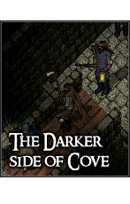
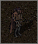
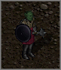

|  |
The Darker Side Of Cove
So, ye have managed to locate this secret page amidst the dusty archives
of Cove. Good job. Now that ye are here... have a ponder...
Never felt like ye fit in with other citizens? Never felt an honorable career
in the Militia suited ye?
Perhaps your place is here, hidden in the shadows; where the most darkest,
and most sinister of Covian secrets reside...
To which darkness do ye belong?

|
Bandits
The scum of Cove; these wretched brigands scrape their living from ransom,
robbery, and other illegal game. Being a Bandit means living a fast paced
life on the run. Do not expect to create trusting friendships, nor thwart
the Militia guardsmen that watch your every step.
 Enter
the criminal underworld. Enter
the criminal underworld. |

|
The Bloodeye Orc Tribe
Led by Chieftain Shak'har, this terrible new tribe of Orcs seeks to revive
the horde that was shattered from the walls of Cove. Through brute strength
the Bloodeye Orc Tribe ravage the lands of the Baronship, raiding settlements
and attacking local folk.
They exemplify the lingering threat of hostility from Orcish kind toward
Covian.
Join the
tribe. |
Close Window |